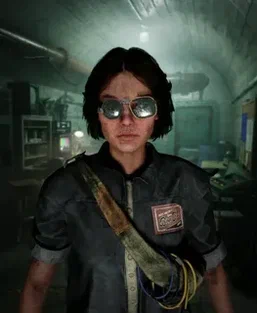

Амелия Колльер
Реагент | Лидер восстания
Локация: Объект Синьяла
Роль: Организатор побега реагентов
Амелия Колльер (ориг. Amelia Collier) — персонаж игры The Outlast Trials, одна из реагентов на объекте Синьяла, которой удалось сбежать с области испытания и вдохновлять других испытуемых бороться с корпорацией Мёркофф.
Биография
Амелия Колльер родилась 3 июня 1934 года в городе Спрингфилд в штате Иллинойс в семье проститутки и мошенника. Её мать в итоге либо ушла из семьи, либо скончалась, так как отцу Амелии пришлось в одиночку воспитывать дочь. Очевидно, что такое воспитание сильно отразилось на Амелии, которая по мере взросления сама начала заниматься мошенничеством и угоном автомобилей. Когда Амелии исполнилось 13 лет, её отец погибает в таинственной автокатастрофе.
Вскоре Амелии удалось завести отношения с Дэймоном Грином, который был добропорядочным гражданином, но пристрастившимся к алкоголю. Где-то в 1959 году Дэймон посещает благотворительный центр Мёркофф и таинственно пропадает, и Амелия решает заняться его поисками. Она также посещает данный центр, но в какой-то момент её охватывает сомнение и она уходит от сотрудников Мёркофф. Однако через 3 дня она возвращается туда и её также, как и остальных посетителей, похищают агенты Мёркофф и доставляют на объект Синьяла в пустыне Аризоны.
Объект Синьяла
На объекте Синьяла девушка становится реагентом в ходе проекта «Тенева 2», и тогда Амелия понимает, что Дэймон Грин также находится где-то в комплексе. Однако сколько бы она ни искала возлюбленного, ей никогда не удавалось найти его, а всё потому что Дэймон находился в совершенно другой комнате отдыха. На объекте Амелия Колльер знакомится с другими реагентами, делясь с ними своими планами по побегу и отмщению директору проекта доктору Хендрику Истерману и всем остальным сотрудникам Синьялы.
В какой-то период времени на Синьяле была запущена временная программа «Обратный отсчёт», и 11 апреля 1960 года Амелия Колльер с тремя другими реагентами на шаттле отправилась на испытание на полигон «Пристань». Однако там Амелия решает наконец воплотить свой план и сбегает из испытания через двери для экс-попов, попутно также вырубая пушера. Амелия также ломает некоторое оборудование Мёркофф и забирает компоненты, которые могли бы ей пригодится в будущем.
Трое реагентов, с которыми Амелия отправилась на испытание, благополучно прошли его и вернулись в комнату отдыха. Однако сотрудники Мёркофф сразу же заметили несостыковку, ведь один реагент отсутствовал, и поэтому они приступили к немедленному расследованию.
Расследование Мёркофф
Команда уборщиков Мёркофф прошлась по области испытания, но не обнаружила трупа не вернувшегося реагента и даже его останков. Однако им на глаза попался бессознательный экс-поп пушер. Также на полигоне были замечены следы босых ног и поломанное оборудование, что даёт сотрудникам Мёркофф точную информацию, что один из реагентов действительно сбежал с зоны испытания. Глава отдела исторических изысканий Клайд Перри немедленно принялся допрашивать пушера и реагентов из группы беглянки, но ни один из допросов не дал весомых результатов. Все трое из группы Амелии яро отрицали, что с ними был четвёртый союзник. Амелия Колльер тем временем обустраивает себе небольшое убежище в старом закрытом пункте по утилизации биоотходов, которое неактивно с мая 1959 года.
Слухи о беглянке доходят и до доктора Истермана, который был совершенно не готов к событиям, где его контроль был нарушен. Среди администрации Синьялы начинается суета, и об беглянке узнаёт администратор комплекса Брэдли Авелльянос. В порыве безысходности Истерман решает применить на испытуемых наркотические вещества, под действием которых один из реагентов произносит имя «Амелия».
Когда у Истермана появилась зацепка, он немедленно сообщает имя беглянки Клайду Перри, который тут же принялся допрашивать реагента Доррис Риттер. В ходе допроса её пришлось назвать фамилию Амелии и информацию, что она искала своего парня Дэймона Грина. Зная полное имя беглянки и имея на руках её досье, Клайд Перри начинает допрашивать Дэймона Грина, но не получив по итогу никакой информации, он убивает его. После чего тело Дэймона Грина сливается в помещение для биоотходов, где в тот момент находилась Амелия. Она с ужасом узнаёт среди трупов своего парня, и убитая горем, она клянётся отомстить доктору Истерману и корпорации Мёркофф любой ценой.
Активность Амелии
Пока сотрудники Мёркофф занимаются расследованием, Амелия Колльер продолжает свою активность на Синьяле. Девушка даже не страшится убивать сотрудников Мёркофф, которые оказались не в том месте и не в то время. Имея доступ к межшаттловой системе и ко всем полигонам, она тайно проникает туда и оставляет на стенах граффити для других реагентов, которые вдохновлялись тем, что она делает. Она изо всех сил пыталась сказать остальным реагентам, что Мёркофф не даруют им свободу и всё, что говорит им Истерман — ложь.
Она также взламывает трансляцию для реагентов, и теперь испытуемые помимо пропаганды Мёркофф по радио могли услышать и сообщения Амелии. Девушка также взламывает телеобращение доктора Истермана перед испытаниями, давая реагентам надежду о побеге. Всё больше впадавший в паническое состояние Истерман пытался подавить активность Амелии и доказать реагентам, что не стоит ей верить. По итогу доктор Истерман в панике и безумии запирается в своём кабинете на несколько дней. Всё больше и больше реагентов начали замечать Амелию Колльер на испытаниях, когда она рисовала граффити или взламывала какие-нибудь системы Мёркофф.
Побег реагентов
21 апреля 1960 года Амелия Колльер вдохновляет столько реагентов, что большинство их них устраивают бунт в комнате отдыха. Амелия взламывает терминал в комнате отдыха и осведомляет реагентов, что настал момент, когда они смогут действительно сбежать из объекта Синьяла. В комплексе начинается тревога, и правлению Синьялы пришлось отправить охранников Мёркофф для урегулирования бунта.
Амелии тем временем удаётся перенаправить шаттл с реагентами к помещению для утилизации биоотходов, но в тоннеле межшаттловой системы им необходимо сделать пересадку в вагон-труповозку. Однако на полпути вагон останавливается и Амелия сообщает по связи, что сотрудники Мёркофф судя по всему прознали о побеге и остановили труповозку. Из-за этого реагентам пришлось идти дальше пешим ходом, но к счастью помещение для утилизации биоотходов было уже неподалёку.
Амелия сделала всё, чтобы реагенты справились с побегом, и поэтому она оставила подсказки на стенах, как им необходимо действовать. Несмотря на угрозу со стороны экс-попа Генриетты Граббс, которая тайно жила в тех катакомбах, реагентам действительно удалось проникнуть в шахты и через них выйти на поверхность пустыни Аризоны. Сама же Амелия Колльер остаётся на объекте, чтобы помогать другим реагентам также выбраться из Синьялы.
Плен Мёркофф
24 апреля 1960 года проблема с бунтом реагентов была решена, но Амелия Колльер не собиралась так просто опускать руки. Когда она была в рельсовом тоннеле и устанавливала мину-завесу, Клайд Перри наконец-то находит её и стреляет ей в ногу из револьвера. Однако Амелия, корчась от боли, заявляет, что ей хочется просто умереть после смерти Дэймона Грина. Тогда директор исторических изысканий с оскалом признаётся, что именно он жестоко убил Дэймона. После этого Клайд Перри наступает на мину, установленную ранее Амелией, и на мгновение теряется в пространстве. В этот момент Амелия хватает кирпич и бьёт Перри по лицу, из-за чего тот падает прямо на рельсы и попадает под шаттл. Клайда Перри смертельно разрезает напополам, а убегавшую Амелию схватывают охранники Мёркофф. Они жестоко избивают девушку дубинками и ломают ей пальцы, а после чего рядом стоящий учёный Мёркофф усыпляет её.
После этого Амелию доставляют в медицинский центр Синьялы для частичного восстановления, и пока она была без сознания, её даже посещает восстановившийся доктор Истерман. По итогу после частичного выздоровления её живой в качестве предупреждения вывешивают в комнате отдыха, тем самым показывая другим реагентам, что будет, если им также вдруг вздумается сбежать. Доктор Истерман также решает, что делать со сбежавшими реагентами, и для этого он хочет использовать их давно выпущенного испытуемого Салливана Нота, которого они всё ещё могут контролировать.
По ходу идущих дней реагенты всё ещё были верны Амелии Колльер, и среди испытуемых появляются подражатели. Некоторые реагенты начали делать граффити на стенах испытаний, как это делала в своё время Амелия. Уборочный персонал Мёркофф старался очищать надписи подражателей, но реагенты всё также принципиально рисовали на стенах позже. Мозес Скарфиотти был удивлён тем, что граффити написаны почерком Амелии, но доктор Истерман предположил, что терапия делает реагентов уязвимыми к влиянию харизмы, и поэтому испытуемые просто стали зависимыми от бывшей беглянки.
1 июня 1960 года Амелия Колльер всё ещё висела в комнате отдыха, однако за эти тяжёлые месяцы она начала испытывать гипоксию и обезвоживание. Чтобы избежать смерти Амелии, доктор Хендрик Истерман распорядился, чтобы её наконец-то сняли со стены. Амелию Колльер по итогу поместили в отделение неотложной помощи Мёркофф для обеспечения её выживаемости.
The Outlast Trials
Амелия Колльер стала одной из самых известных фигур в истории Синьяла. Её побег и последовавшее за ним восстание реагентов стали поворотным моментом в проекте «Тенева 2». Её история вдохновила многих испытуемых на сопротивление и продолжает жить в памяти тех, кто пережил те события.
Несмотря на то, что Амелия была поймана и подвергнута публичному наказанию, её идеи не были уничтожены. Она показала реагентам, что сопротивление возможно, и что даже в самых безнадёжных условиях можно бороться за свою свободу. Её имя стало символом надежды для тех, кто всё ещё находится в стенах Синьяла.
Галерея


Интересные мелочи
- У Амелии отличные результаты по тесту Струпа.
- В журнале разработки «Project Breach» Амелия описывается как очень находчивая, умная, хитрая, мстительная и ненавидящая хулиганов.
- Амелии Колльер посвящена 4 и частично 5 главы комикса The Murkoff Collections.
- Амелия стала первым реагентом, которому удалось сбежать с зоны испытательной среды.
- Её отношения с Дэймоном Грином стали одной из главных движущих сил её борьбы против Мёркофф.